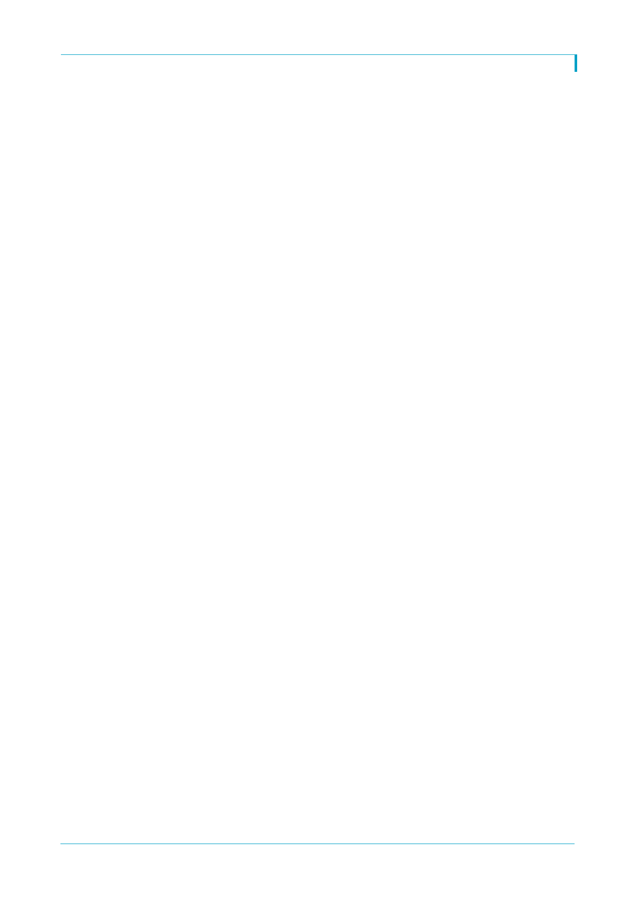

기업은행(024110)
기업개요 및 용어해설
기업은행은 중소기업은행법에 따라 1961년에 설립되었으며 정부 손실보전조항이 있는 특수은행이다. 설립목적이 중소기
업 금융지원으로 대출의 대부분을 중소기업들에게 공급한다. 또한 다른 시중은행들과 다르게 예금의 절반 가량을 중소기
업금융채권(중금채)를 통해 조달한다. 현재 기업은행은 IBK캐피탈, IBK투자증권, IBK연금보험, IBK저축은행 등을 계열회
사로 두고 있다.
순이자마진(NIM): 순이자이익 / 이자수익자산(평잔)
고정이하여신: 건전성에 따라 정상, 요주의, 고정, 회수의문, 추정손실로 여신 분류. 고정, 회수의문, 추정손실 합산
고정이하여신비율: 고정이하여신 / 총여신
충당금 커버리지 비율: 대손충당금 / 고정이하여신
대손율: 대손충당금전입액 / 총여신
이익경비율: 일반관리비 / 총영업이익
바젤 III: 국제결제은행(BIS) 산하 바젤은행감독위원회(BCBS)가 내놓은 국제 은행 자본규제
보통주자본비율(CET1 ratio): 보통주자본 / 위험가중자산(RWA)
4